In this chapter, we’ll use some simple classical reaction systems as examples to introduce the basics of using STEPS. More specifically, we’ll focus on reaction systems that occur in a single, well-mixed reaction volume. The topics presented in later chapters (such as surface-volume interactions, diffusion, 3D environments, etc) will build on the material presented in this chapter.
In our first STEPS simulation, we’ll be working with the following simple system, which consists of a single reversible reaction:
(1)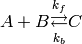
with ‘forward’ and ‘backward’ reaction constants 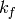 and 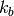, respectively.
The first thing we need to do, is to write some Python code that “passes” this equation on to STEPS. This is called model specification, which in STEPS consists of building a hierarchy of Python objects that list the species occurring in your model, their relevant chemical and physical properties and their interactions. As explained in the chapter introduction, here we deal only with sets of reaction rules that occur together within one single chemical volume.
The first step in model specification is to import package steps.model. This package contains all the definitions of the objects and functions you need to describe the physics and chemistry of your model within STEPS. This entire package has been written in c++ and exposed to Python through SWIG (Simplified Wrapper and Interface Generator), like most packages in STEPS. We import the package using an alias, smodel, to reduce the required amount of typing (a common convention in Python):
>>> import steps.model as smodel
smodel now refers to the steps.model Python module containing the class definitions.
Next, we’re going to create a top-level container object for our model (steps.model.Model). This top level container is required for all simulations in STEPS but itself does not contain much information and merely acts as a hub that allows the other objects in the model specification to reference each other. In the code listing below, we store our Model object in variable mdl. When you create an object in Python information inside the parenthesis is passed onto the class constructor. Each constructor requires specific information, though some information can be omitted and will be given default values, as we will see. However, for a steps.model.Model object, the constructor does not require any information at all:
>>> mdl = smodel.Model()
Our next task is to enumerate all the chemical species that can occur in the model. This means creating a number of objects of type steps.model.Spec and passing them on to the steps.model.Model container. For our simple reaction equation (1), we create three steps.model.Spec objects (molA, molB, and molC) corresponding to our three chemical species:
>>> molA = smodel.Spec('molA', mdl)
>>> molB = smodel.Spec('molB', mdl)
>>> molC = smodel.Spec('molC', mdl)
The initializer of class steps.model.Spec requires two arguments: first an identifier string that can be used later on to refer to this object. This identifier string has to be unique among all species objects. It’s important to distinguish between the Python variable we use to store the reference to the newly created object on the one hand (e.g. molA), and the identifier string on the other (e.g. ‘molA’). In this example they bear the same name, but this is not required. These identifier strings are a common requirement for STEPS objects at this level and we will see when and how they are necessary later in this chapter, when describing geometry and performing simulations with our model.
We should note at this point that our object reference variables should be named differently also, though Python will allow you to reuse the same name (one could even use the same name to reference objects of different type because a variable in Python does not have to reference a specific type, as is the case in c++ for example). So this will not result in an error in Python:
>>> spec = smodel.Spec('molA', mdl)
>>> spec = smodel.Spec('molB', mdl)
and since the identifier strings are different this is not a STEPS error either. However, in the above code in the first line spec at first references the ‘molA’ object, but in the second line the object spec references changes to the ‘molB’ object, and the reference to the ‘molA’ object is lost. These object references are required when defining the species’ interactions, as we will see, so as a rule in STEPS all variables should be given a unique name so that no object references are lost. Actually, we could use container methods to return references to objects, but let’s keep things simple for now.
The second argument in the steps.model.Spec initializer is an object reference to the model we just created (stored in variable mdl). This will allow the Spec initializer to add itself to the steps.model.Model container.
Next, we will create a volume system:
>>> vsys = smodel.Volsys('vsys', mdl)
Volume systems (objects of class steps.model.Volsys) are container objects that group a number of stoichiometric reaction rules (in later chapters we’ll see how diffusion rules can also be added to these volume systems). The user has the option of grouping all reactions in the entire system into one single big volume system, or using multiple volume systems to organize reaction rules that belong together. The second option may be preferred for larger models, but for our simple example we only require one volume system.
The arguments for the steps.model.Volsys initializer are the same as for steps.model.Spec: The first argument must be an identifier string, which can be used for future referencing. This identifier must be unique among all volume systems in the model. The second argument is the reference to the steps.model.Model parent object of which this steps.model.Volsys will be a child.
Finally, we need to create the reaction rules themselves. In STEPS a single reversible reaction has to be regarded as two separate reaction rules; the first rule corresponding to the “forward” reaction and the second rule to the “backward” reaction. So for our simple model in equation (1), we have to create two objects of class steps.model.Reac and add them to the steps.model.Volsys object we just created:
>>> kreac_f = smodel.Reac('kreac_f', vsys, lhs=[molA,molB], \
rhs=[molC], kcst=0.3e6)
>>> kreac_b = smodel.Reac('kreac_b', vsys, lhs=[molC], rhs=[molA,molB])
>>> kreac_b.kcst = 0.7
The initializer for Reac can be provided with a bit more information than the initializers for the other objects until now (the backslash used here simply allows us to continue our code on a new line and is used purely to fit the code into this document). Aside from the required identifier string (which is checked to be unique among all reactions in all volume systems) and a required reference to the Volsys object to which this reaction will be added, we can also specify reaction stoichiometry at this stage (alternatively we can create the object with the minimum information and set the stoichiometry with object methods). This stoichiometry is specified by two Python lists:
The lists must contain references to the required Spec objects (and not identifier strings), so we can see why it was important not to lose these object references when we created our Spec objects. Both lists can also be empty e.g. lhs=[] or rhs=[] (this is the default behavior if lists are not supplied to the constructor, but can be changed with object methods setLHS and setRHS). Care should be used in the case of empty lists because either situation could break physical laws such as the conservation of mass, although they are available because they can be useful for some simulation approximations. If the left hand side is empty, we have a zero order reaction that acts as a source, i.e. it creates molecules “out of thin air”. If the right hand side is empty, we have a sink reaction that merely destroys molecules. Obviously, within one single reaction rule, it doesn’t make sense to set both lhs and rhs to an empty list.
We can also already set the default rate constants for both the forward and backward reaction, by manipulating the kcst property of the Reac objects. As shown above these rate constants can be initialized as a parameter during object construction, or by using object methods after the object has been created, which is common to many properties of objects in STEPS [1].
These rate constants can also be changed later on during the simulation, but values given here will be used as default values when a simulation state is initialized. Generally speaking, physical constants in STEPS must be specified in SI units [2]. This is also true for reaction constants, where of course the actual interpretation of the unit of a reaction rule depends on the order of that reaction. In other words, it depends on the number of species in the left hand side. The constant for a zero or first reaction rule has units 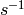; for a second order reaction this is 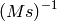; for a third order reaction this is 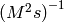; and so on. While there is no upper limit on the order of the reaction when working with Reac objects within the context of package steps.model, STEPS simulators will not deal with any reaction rule that has an order larger than 4.
Finally, the full Python code of our model description looks like this:
>>> import steps.model as smodel
>>> mdl = smodel.Model()
>>> molA = smodel.Spec('molA', mdl)
>>> molB = smodel.Spec('molB', mdl)
>>> molC = smodel.Spec('molC', mdl)
>>> volsys = smodel.Volsys('vsys', mdl)
>>> kreac_f = smodel.Reac('kreac_f', volsys, lhs=[molA,molB], \
rhs=[molC], kcst = 0.3e6)
>>> kreac_b = smodel.Reac('kreac_b', volsys, lhs=[molC], rhs=[molA,molB])
>>> kreac_b.kcst = 0.7
Notice that we have said nothing about the actual geometry of our model at this point, nor have we said anything related to the simulation itself (initial conditions, special events during the simulation, etc). We have just created a hierarchy of Python objects that describes the interactions between chemical species and we have done this on a rather abstract level.
Before we can start doing simulations, we need to say something about the environment in which our reactions will occur. Specifically, we need to specify the volume compartments in which reactions take place, and sometimes also the surface patches around or in between these compartments [3]. We then link each of these compartments with one or more of the volume systems defined in the kinetic model, in a process called annotation. There are currently two types of geometry that can be specified in STEPS:
Well-mixed geometry
In this type of geometry description, compartments are described only by their volume in cubic meters and patches by their area in square meters and connectivity to compartments. Nothing is said about the actual shape.
Tetrahedral mesh geometry
In this type of geometry, a compartment is a collection of 3D tetrahedral voxels and a patch is a 2D section between compartments composed of triangular surface in between tetrahedrons.
We will talk about tetrahedral meshes (and their relationship with well-mixed geometry) in the chapter on Example: Simulating Diffusion. In this chapter, however, we will restrict ourselves to well-mixed geometry, because we will only use the well-mixed stochastic solver. Specifying a well-mixed compartment that can be used together with the kinetic model from the previous section is very easy. First, need we to import the STEPS module that contains the objects used to define the geometry, namely steps.geom:
>>> import steps.geom as swm
Like before we give the steps.geom module an alias swm, simply to reduce later typing. Next we generate a parent container object, that will collect and store the actual compartments. The purpose of this object is in many ways similar to the purpose of the steps.model.Model object we discussed in the previous section, and the constructor does not require any information:
>>> wmgeom = swm.Geom()
Finally, the actual compartment we need for simulating our model must be created:
>>> comp = swm.Comp('comp', wmgeom)
>>> comp.addVolsys('vsys')
>>> comp.setVol(1.6667e-21)
Since our model is very simple, we only create one compartment, an object of type steps.geom.Comp, and we store it in the variable called comp. The initializer takes two arguments here: first a unique identifier string (that will once again be used later on, during actual simulation) and a reference to the container object. Since we only have one compartment, we use the rather unimaginative identifier comp.
The second line corresponds to the annotation, which in this case is very simple. It links the compartment we just created with a volume system that carries the identifier ‘vsys’. At this stage, only the string is stored in the Comp object. In other words, STEPS makes no attempt to resolve the link by searching for a steps.model.Volsys object that has the identifier ‘vsys’. In fact, STEPS couldn’t resolve the link at this point, because the kinetic model and the geometric model remain completely separated in memory. They will remain separate until the time we create an actual simulation; that is the point where these cross references between kinetic model and geometry will be resolved.
This “workflow” enables us to build several kinetic model descriptions and geometry descriptions separately, and put them together as needed for simulation. The only requirement for any combination of kinetic model and geometry to work is that the volume systems referenced from the geometry have been defined in the kinetic model. An error will result when creating the simulation object (which we will do next) if any compartment contains a reference to a volume system that is unknown in the model description.
The third line sets the volume of the compartment. Once again, SI units must be
used, meaning that the volume is specified in  . The volume of
compartment ‘comp’ therefore has a volume of 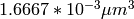.
This parameter can be set in the Comp object initializer, explicitly with the
setVol method (as above), or with the property function vol (i.e.
comp.vol = 1.667e-21).
. The volume of
compartment ‘comp’ therefore has a volume of 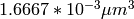.
This parameter can be set in the Comp object initializer, explicitly with the
setVol method (as above), or with the property function vol (i.e.
comp.vol = 1.667e-21).
With all this in place, we can finally start performing simulations. Since STEPS is a set of Python packages and extensions, simulations can either be fully scripted and run automatically, or they can be controlled interactively from the Python prompt. In this text, we’ll just run a simulation “automatically” from begin to end, without any interactive input.
The simulator (or solver) we’ll be using here is the Wmdirect solver. Wmdirect is an implementation of Gillespie’s Direct Method [4] for stochastic simulation and has the following properties:
To perform a simulation of the above kinetic model and geometry with Wmdirect, we first need to create a random number generator. This must be done explicitly by the user, because this allows you to choose which random number generator to use (even though that choice is rather limited right now) and, more importantly, how to use it. Random number generation objects can be found in package steps.rng:
>>> import steps.rng as srng
>>> r = srng.create('mt19937', 256)
>>> r.initialize(23412)
In the first line, we import the steps.rng package with alias srng. In the next line, we actually generate a random number generator using the function steps.rng.create(). The first argument selects which type of random number generator we want. STEPS currently only implements one pseudo RNG algorithm, ‘mt19937’, also known as the “Mersenne Twister”. The Mersenne Twister is supported because it is considered to be quite simply the current best choice for numerical simulations, because of its large period and fast runtime. The second argument selects how many random numbers are pre-generated and stored in a buffer.
In the third line, we initialize the random number generator with a seed value. Here, we initialize the random number generator only once. You can, however, also re-initialize it prior to each iteration, for instance to ensure a simulation starts with some specific seed value [6].
Next we will create the actual solver object. Since we will be doing simulations using solver Wmdirect, we first import the package in which all solvers have been implemented, then create the steps.solver.Wmdirect object:
>>> import steps.solver as ssolver
>>> sim = ssolver.Wmdirect(mdl, wmgeom, r)
For all steps.solver objects (currently Wmdirect, Wmrk4 and Tetexact) the initializer requires three arguments. The first argument is the model description (a variable that references the steps.model.Model object we created in the first section of this chapter), followed by the the well-mixed geometry description (a variable that references a steps.geom.Geom object) and finally also a variable that references the random number generator we just constructed. And that’s it.
The variable sim now references the solver object we just created which contains all the methods we require to run and control our simulation, so now we can start performing simulations. First we call the reset function on the solver object:
>>> sim.reset()
This method sets all values within the solver “state” to their default values. This state includes the concentration of species in all compartments (set to 0 everywhere), rate constants (set to their defaults from the steps.model objects) etc. If you want to re-initialize the random number generator prior to each individual iteration, setting the seed value right before calling the reset function would be a good choice [7].
After the reset function call, we can start manipulating the “state” of the simulation, i.e. setting up the initial conditions of the simulation. Each solver implemented in STEPS includes a numbers of functions for doing that. Each solver, including the Wmdirect solver that we’re using here, implements a basic set of functions that allows you e.g. to get/set concentration of species in compartments and patches as a whole. In addition, solvers will typically implement additional functions that only make sense for their specific implementation. Due to the internal structure of the code, all solver methods are available for all solvers, but methods which don’t make sense for a particular solver (e.g. getting/setting concentration in individual tetrahedrons doesn’t make sense for a well-mixed solver) will display an error message if called and will not affect your simulation at all. A detailed list of which methods are available for which solvers is available in steps.solver.
Now let’s set up our initial conditions with simulation object methods:
>>> sim.setCompConc('comp', 'molA', 31.4e-6)
>>> sim.setCompConc('comp', 'molB', 22.3e-6)
This means we’re setting the concentration of molA to 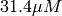 and the concentration of molB to 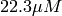 in our compartment comp. We’re setting these concentration values at simulation time 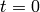, but these functions can be called at any point in time, to control the concentration of species during simulation. Here we see an example of why the identifier strings were necessary during our model specification. The simulation methods require the identifier strings to the steps.model and steps.geom objects and not a variable that references the objects. This is necessary because the model and geometry specification are separate from the simulation and could be organised inside functions or even separate modules meaning a reference to the object will often not be available.
Next we’ll use NumPy to generate some auxiliary numerical arrays that will be used during simulation [8]:
>>> import numpy
>>> tpnt = numpy.arange(0.0, 2.001, 0.001)
>>> res = numpy.zeros([2001,3])
The first array, tpnt, contains the time points at which we will pause the
simulation. This range of numbers starts at 0.0 and runs to 2.0 seconds with
 intervals. That gives us a total of 2001 “time points”.
The second array, res, will be used to store the concentrations of molA,
molB and molC over time: that’s why the array has 2001 rows and 3 columns.
We use NumPy’s zeros function, which not only allocates the array but also
initializes all elements to zero.
intervals. That gives us a total of 2001 “time points”.
The second array, res, will be used to store the concentrations of molA,
molB and molC over time: that’s why the array has 2001 rows and 3 columns.
We use NumPy’s zeros function, which not only allocates the array but also
initializes all elements to zero.
Now it’s time to actually run an iteration:
>>> for t in xrange(0,2001):
sim.run(tpnt[t])
res[t,0] = sim.getCompCount('comp', 'molA')
res[t,1] = sim.getCompCount('comp', 'molB')
res[t,2] = sim.getCompCount('comp', 'molC')
>>>
We loop over all time points using an xrange to generate indices. Then we use the basic solver function run to forward the simulation until the time specified by the function’s argument [9].
After having forwarded the simulation one millisecond, we use function getCompCount to sample the number of molecules present in compartment comp for each of our three species. All of these functions are described in more detail in steps.solver.
Finally, we can plot these values using Matplotlib (result shown in Figure 2.1):
Simulation results from a single iteration of the second order reaction given in equation (1) with solver Wmdirect. Due to the low numbers of molecules, we can clearly see the reactions occurring as discrete events.
>>> import pylab
>>>
>>> # Plot number of molecules of 'molA' over the time range:
>>> pylab.plot(tpnt, res[:,0], label = 'A')
>>> # Plot number of molecules of 'molB' over the time range:
>>> pylab.plot(tpnt, res[:,1], label = 'B')
>>> # Plot number of molecules of 'molC' over the time range:
>>> pylab.plot(tpnt, res[:,2], label = 'C')
>>>
>>> pylab.xlabel('Time (sec)')
>>> pylab.ylabel('#molecules')
>>> pylab.legend()
>>> pylab.show()
If we’re using a stochastic simulation algorithm such as that implemented in solver Wmdirect, we’re usually interested in analysing the range of behaviours produced by different iterations. One way of doing that is by taking the mean over multiple iterations (100 in this example), as is shown in the following simulation code (result shown in Figure 2.2):
>>> NITER = 100
>>> res = numpy.zeros([NITER,2001,3])
>>> tpnt = numpy.arange(0.0, 2.001, 0.001)
>>>
>>> for i in xrange(0,NITER):
sim.reset()
sim.setCompConc('comp', 'molA', 31.4e-6)
sim.setCompConc('comp', 'molB', 22.3e-6)
for t in xrange(0,2001):
sim.run(tpnt[t])
res[i,t,0] = sim.getCompCount('comp', 'molA')
res[i,t,1] = sim.getCompCount('comp', 'molB')
res[i,t,2] = sim.getCompCount('comp', 'molC')
>>>
>>> res_mean = numpy.mean(res, 0)
>>>
>>> # Plot mean number of molecules of 'molA' over the time range:
>>> pylab.plot(tpnt, res_mean[:,0], label = 'A')
>>> # Plot mean number of molecules of 'molB' over the time range:
>>> pylab.plot(tpnt, res_mean[:,1], label = 'B')
>>> # Plot mean number of molecules of 'molC' over the time range:
>>> pylab.plot(tpnt, res_mean[:,2], label = 'C')
>>>
>>> pylab.xlabel('Time (sec)')
>>> pylab.ylabel('#molecules')
>>> pylab.legend()
>>> pylab.show()
Average of multiple (n = 100) iterations of the second order reaction given in equation (1).
As you can see, the array that will be used to store the simulation results (array res) is now a three dimensional array, with the first dimension set to record 100 iterations. The loop that runs over all time points is now embedded in a loop that runs over the iterations. The reset function and the initial conditions are called at the beginning of each iteration. Since we don’t need any detailed control over which iteration starts with which RNG seed value, we initialize the RNG just once, prior to everything else. Once the 100 iterations are completed, we call NumPy’s mean function to compute the mean over the first dimension, and then plot these mean values.
In the previous section, we paused the simulation at regular time intervals only to record the concentrations of various molecules. The only time we actively changed the simulation state was at t=0, to set the initial conditions. However, the function calls we used to set initial conditions can be called at any time during the simulation.
As an example, let’s interrupt our simulation at t=1sec to add 10 molecules of species molA. The mean behaviour of this simulation is shown in Figure 2.3):
>>> for i in xrange(NITER):
sim.reset()
sim.setCompConc('comp', 'molA', 31.4e-6)
sim.setCompConc('comp', 'molB', 22.3e-6)
for t in xrange(0,1001):
sim.run(tpnt[t])
res[i,t,0] = sim.getCompCount('comp', 'molA')
res[i,t,1] = sim.getCompCount('comp', 'molB')
res[i,t,2] = sim.getCompCount('comp', 'molC')
# Add 10 molecules of species A
sim.setCompCount('comp', 'molA', sim.getCompCount('comp', 'molA') + 10)
for t in xrange(1001,2001):
sim.run(tpnt[t])
res[i,t,0] = sim.getCompCount('comp', 'molA')
res[i,t,1] = sim.getCompCount('comp', 'molB')
res[i,t,2] = sim.getCompCount('comp', 'molC')
>>>
The mean of multiple (n = 100) iterations of the second order reaction, with an injection of 10 molecules of species A at t = 1.0.
When you have to do these things regularly, you might want to encapsulate various parts of this code in separate functions to save yourself some coding time.
Quite often, one does not want to simulate the sudden injection of molecules, but rather keep the concentration of some species constant at a controlled value. This means that any reaction involving the buffered molecule will still occur if the reactants are present in sufficiently large numbers, but the occurrence of this reaction will not actually change the amount of the buffered species that is present. The following code snippet shows how, during the time interval 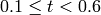, the concentration of species A is clamped to whatever its value was at 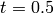 [10]. Results can be seen in Figure 2.4) for a single iteration.:
>>> for i in xrange(NITER):
sim.reset()
sim.setCompConc('comp', 'molA', 31.4e-6)
sim.setCompConc('comp', 'molB', 22.3e-6)
for t in xrange(0,101):
sim.run(tpnt[t])
res[i,t,0] = sim.getCompCount('comp', 'molA')
res[i,t,1] = sim.getCompCount('comp', 'molB')
res[i,t,2] = sim.getCompCount('comp', 'molC')
sim.setCompClamped('comp', 'molA', True)
for t in xrange(101,601):
sim.run(tpnt[t])
res[i,t,0] = sim.getCompCount('comp', 'molA')
res[i,t,1] = sim.getCompCount('comp', 'molB')
res[i,t,2] = sim.getCompCount('comp', 'molC')
sim.setCompClamped('comp', 'molA', False)
for t in xrange(601,2001):
sim.run(tpnt[t])
res[i,t,0] = sim.getCompCount('comp', 'molA')
res[i,t,1] = sim.getCompCount('comp', 'molB')
res[i,t,2] = sim.getCompCount('comp', 'molC')
>>>
A single iteration of the second order reaction, where the concentration of A is clamped during the interval .
The function setCompClamped takes a boolean which is used to turn on or off the clamping of the species in the specified compartment.
A final way in which we will control our simulation in this chapter is by activating/inactivating a reaction channel. Inactivating a reaction channel means that it will never occur, regardless of whether the required reactants are present in sufficient numbers. In the following simulation:
This time, we’ll wrap the run-until-time-t part of the code in a separate function to save ourselves some writing, and we also have to alter our tpnt and res arrays to store data for 12 seconds:
>>> def run(i, tp1, tp2):
for t in xrange(tp1,tp2):
sim.run(tpnt[t])
res[i,t,0] = sim.getCompCount('comp', 'molA')
res[i,t,1] = sim.getCompCount('comp', 'molB')
res[i,t,2] = sim.getCompCount('comp', 'molC')
>>>
>>> res = numpy.zeros([NITER,12001,3])
>>> tpnt = numpy.arange(0.0, 12.001, 0.001)
The actual simulation code now becomes:
>>> for i in xrange(NITER):
sim.reset()
sim.setCompConc('comp', 'molA', 31.4e-6)
sim.setCompConc('comp', 'molB', 22.3e-6)
run(i,0,2001)
sim.setCompReacActive('comp', 'kreac_f', False)
run(i,2001,4001)
sim.setCompReacActive('comp', 'kreac_f', True)
run(i,4001,6001)
sim.setCompReacActive('comp', 'kreac_b', False)
run(i,6001,8001)
sim.setCompReacActive('comp', 'kreac_b', True)
run(i,8001,10001)
sim.setCompReacActive('comp', 'kreac_f', False)
sim.setCompReacActive('comp', 'kreac_b', False)
run(i,10001,12001)
>>>
The results of this code can be seen in Figure 2.5.
The mean of multiple (n = 100) iterations of the second order reaction, with the forward and backward reaction turned on and off, as described in the text.
Footnotes
| [1] | This is an example of an object property: kcst is a property of our Reac object. In this example kreac_f.kcst = 0.3e6 is an indirect call to object method kreac_f.setKcst(0.3e6). For more information on available property functions see API References. |
| [2] | A future version of STEPS may provide facilities for working with custom units. |
| [3] | Patches will be discussed in the next chapter. |
| [4] | Gillespie DT: Exact stochastic simulation of coupled chemical reactions. J Phys Chem 1977, 81:2340-2361 |
| [5] | However, if you present a well-mixed solver in STEPS with a tetrahedral mesh, the solver will automatically extract the well-mixed properties (i.e. the volumes of compartments, the areas of patches and their connectivity) from the mesh. |
| [6] | Solver Wmdirect guarantees that a stochastic simulation started with the same seed value will recreate the exact same chain of events. The same is true for solver Tetexact. This might not be the case in future solvers, particularly in solvers that have been parallellized using some form of “look-ahead” execution. |
| [7] | Since reset currently doesn’t use any random numbers, in principle you might also initialize the random number generator’s seed value right after calling it. This might change with future solvers, so as a rule you’re better off if you make it a habit to initialize the random number generator before calling reset. |
| [8] | Presently, all structures for storing simulation results are explicitly created by the user and it is also up to the user to include in their script, typically, a for loop that will run the simulation, collect data and store this data in an appropriate structure, such as a list or NumPy array. In the future we may implement the option to pass to the simulation object information about what data to store, which will then be collected internally and returned to the user or saved automatically in files. This will make it much simpler to run a simulation and improved runtime, for the cost of a slightly lengthier initialization process. |
| [9] | The first time the loop is executed, the current time is 0.0 because we called the reset() function earlier. In this case, sim.run(0.0) doesn’t move the simulation forward. |
| [10] | This way of using the compartmental buffering mechanism will not often be used in a real simulation; more often clamping will be combined with a call to setCompCount or one of its variants. |